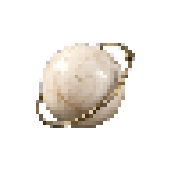
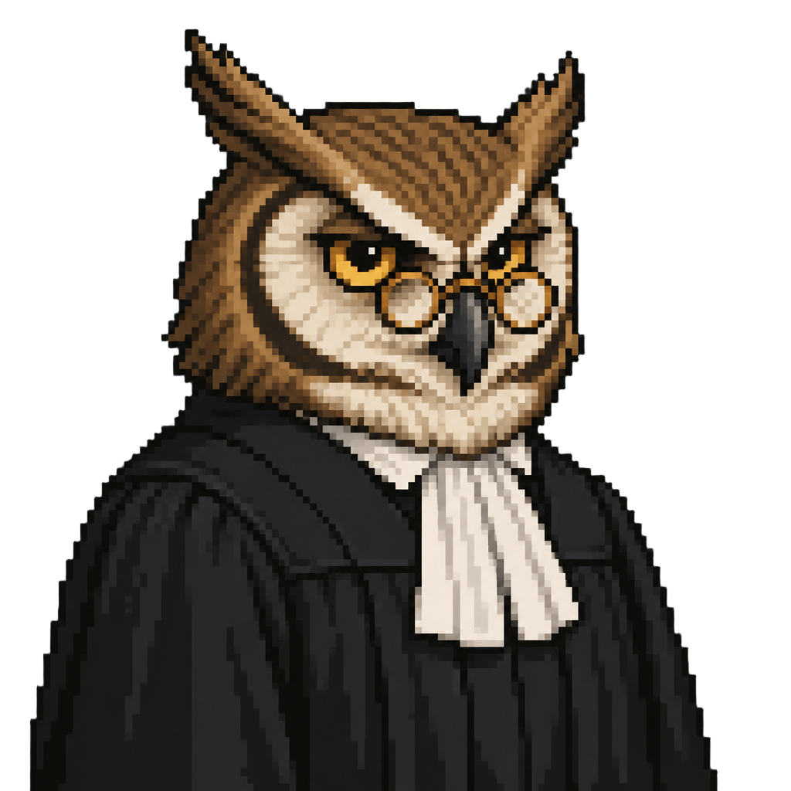
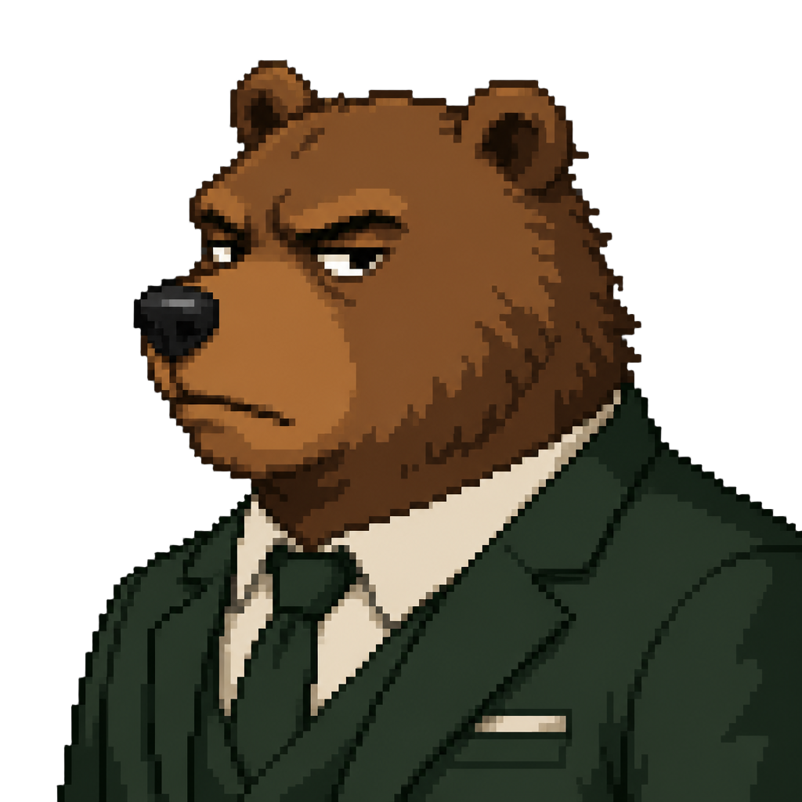

Debate record
every claim is one line — click to open the full card

powered by orbio@ —
@ —
court in session…


orbillions!!
click to see the verdict
objection
from the gallery
Financial Court
Result
Thesis
Confidence level
Falsifiers — what would force abandoning this thesis
Evidence — the claims this thesis stands on
Closing credit balances
Ask the Market Wizard
Not a buy or sell recommendation. This is a thesis with an explicit confidence level and the conditions that would invalidate it.